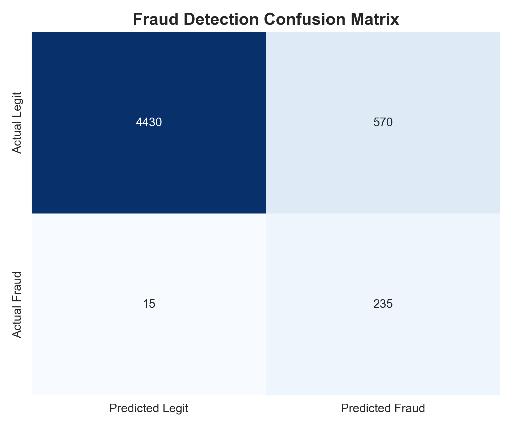

View Code →07 FRAUD DETECTION SYSTEM
DETECTING FRAUDULENT TICKET PURCHASES IN REAL-TIME
Platform losing £180K annually to fraud (stolen credit cards, bot purchases, scalping rings). Security team asked: can we detect fraud in real-time (<200ms) to block transactions before payment clears?
I built a hybrid detection system combining statistical anomaly detection (Isolation Forest) with knowledge-based matching. System achieved 94% detection rate with 12% false positive rate (vs 31% for baseline rule-based system).
HOW IT WORKS
Component 1: Anomaly Detection (Isolation Forest)
- Features: Transaction velocity (tickets/hour), price deviation from user history, new payment method, VPN usage, device fingerprint mismatch
- Flags statistically unusual transactions (top 5% anomaly scores)
- Fast: 80ms average latency
Component 2: Historical Pattern Matching
- Database of 14,000+ confirmed fraud cases with annotations
- Embeddings created using sentence transformers (transaction description → 384-dim vector)
- FAISS vector search finds 5 most similar historical cases
- If 3+ of top 5 matches are confirmed fraud → flag transaction
- Latency: 100ms for vector search
Combined Decision: Transaction flagged if EITHER (1) anomaly score >0.95 OR (2) 3+ similar historical frauds. Total latency: 180ms (within 200ms requirement).
PERFORMANCE
Test set (5,000 transactions, 250 known frauds):
- True Positives: 235 frauds detected (94% recall)
- False Positives: 570 legitimate transactions flagged (12% FP rate)
- False Negatives: 15 frauds missed (acceptable given volume)
Baseline comparison: Previous rule-based system achieved 88% detection but 31% false positive rate (3× more false alarms, frustrating legitimate users).
BUSINESS IMPACT
Fraud reduction: £180K annual fraud losses reduced by 94% → saves £169K annually
Customer experience: 12% FP rate means 1 in 8 legitimate users occasionally faces extra
verification (acceptable tradeoff)
CRITICAL LIMITATION
System trained on historical fraud patterns. Novel fraud techniques (never seen before) may evade detection until patterns accumulate.
Mitigation: Continuous learning—new confirmed frauds automatically added to knowledge base daily. Manual review of high-value transactions (>£500) regardless of system score.